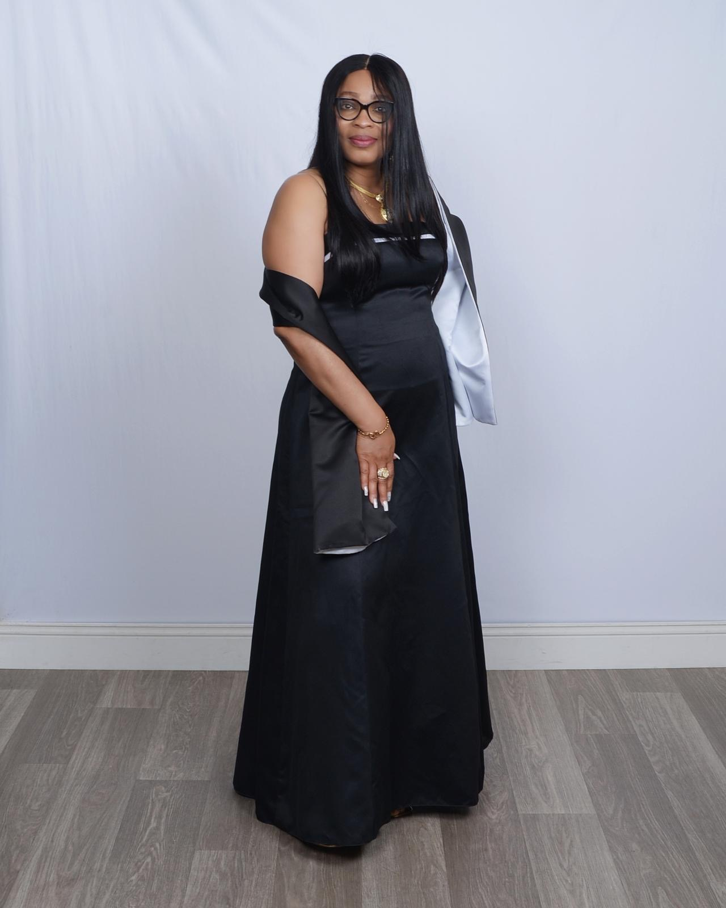

01
SELFLESS
“You gave before you ever asked to receive.”
Every sacrifice made quietly, every burden shouldered with boundless grace. A mother whose generosity has always preceded every expectation.

SEPTEMBER
A queen was born.
“My love for the 9th month of the year knows no bounds because a queen was born.”
It’s another trip around the sun, another year to celebrate the beautiful woman you are, and another opportunity for me to thank God for the gift of you.
Four pillars that define the grace, strength, and tenderness of your heart.
“You gave before you ever asked to receive.”
Every sacrifice made quietly, every burden shouldered with boundless grace. A mother whose generosity has always preceded every expectation.

“You make warmth feel effortless.”
In a world that can often be loud and cold, your presence is an immediate sanctuary. Your laughter softens every hardship.
“There is a quiet elegance in the way you carry yourself.”
Dignity that never needs to announce itself. You move through life with unmatched composure, poise, and quiet majesty.
“The kind of love that makes a house feel like home.”
An enduring refuge where we were always safe, always cherished, and continually reminded of our divine worth.
“Some things only get better with time.”
“She isn’t only someone to admire. She is someone who laughs, dances, celebrates, smiles and lives.”
Thank you for every prayer.
Every sacrifice.
Every sleepless night.
Every time you put us before yourself.
Every time you gave even when you had little left to give.
“So much of who I am, and who I continue to strive to become, is because of you.”
Even though you're miles away...
“Distance changes geography, not love.”
“I pray that God blesses us with the necessary resources to give you the finest things in life, because you deserve every beautiful thing this world has to offer.”
“After everything you have done for us, I pray that life gives you countless reasons to smile, and that we get to love, honour, and celebrate you for many, many more years.”
A sealed message sealed with love and waiting for you.
My love for the 9th month of the year knows no bounds because a queen was born.
It’s another trip around the sun, another year to celebrate the beautiful woman you are, and another opportunity for me to thank God for the gift of you.
Every day, I pray and thank the Lord for your heart, your life, and the privilege of calling you my mother. Honestly, I don’t know what I would do without you.
You are one of the greatest blessings God has given me, and I will never take the gift of having you for granted.
You are selfless, kind, gracious, and full of so much love. Watching you grow older like fine wine has been one of my greatest joys. Every year, I look at you and feel nothing but gratitude that I get to call you my mother.
Thank you, Mom, for every prayer, every sacrifice, every sleepless night, every time you put us before yourself, and every time you gave even when you had little left to give.
Thank you for being our safe place, our biggest cheerleader, and the woman who never stopped believing in us. So much of who I am, and who I continue to strive to become, is because of you.
Even though you’re miles away, I hope you know that distance could never make you feel any less close to my heart. I may not have enough pictures of us together, but I carry countless memories of you with me, and I hope we get to create so many more.
I pray that God blesses us with the necessary resources to give you the finest things in life, because you deserve every beautiful thing this world has to offer.
After everything you have done for us, I pray that life gives you countless reasons to smile, and that we get to love, honour, and celebrate you for many, many more years.
On this day and always, I just want you to know that I love you more than words could ever fully express. I am so incredibly proud to be your daughter, Gloria, and even more grateful that God chose you to be my mother.
Happy Birthday, Mom.
With all my love, Gloria
God’s finest art. 💕
God’s finest art.
Loved across every mile between us. ❤️